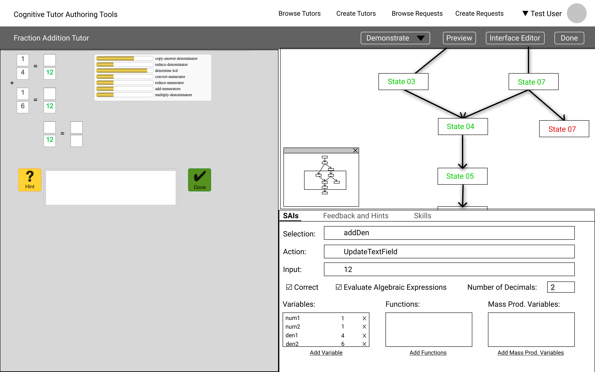

UX research · Authoring tools
Cognitive Tutor Authoring Tools
Making tutor authoring more understandable by connecting the learner view, solution graph, and feedback controls.
- My role
- UX research, interaction design, prototyping, and web development
- Audience
- Educators and tutor authors, including non-programmers
- Context
- Carnegie Mellon University · Advised by Vincent Aleven
The authoring problem
Cognitive Tutor Authoring Tools let educators build learning activities that respond to a learner’s solution steps. The existing software offered powerful functionality, but authors struggled to form a clear mental model of the graph and find the controls needed for their task.
Research pointed to fragmented windows, counterintuitive graph interactions, and a long authoring process. The design challenge was to make the relationship between the tutor, the solution paths, and the feedback easier to understand and operate.
My role and constraints
I conducted stakeholder research, developed low- and high-fidelity prototypes, tested the interface, and implemented web-based authoring features. I worked with Professor Vincent Aleven as my advisor.
The interface needed to make a complex model accessible to non-programmers while retaining the flexibility to represent correct paths, common errors, hints, and feedback.
Design decisions
Make the authoring model visible
The research showed that access to features was not enough: authors needed to understand how states and actions related to what a learner would see. I brought the learner interface and behavior graph into a shared workspace.
Reduce the need to manage separate windows
I explored a docked layout that groups the tutor, graph, and editing controls. The panels keep related information together while allowing authors to configure the workspace for their task.
Connect selection with editing
The graph interactions support selecting and editing a state without reloading the entire interface. Nearby controls expose the action, input, feedback, and skill information associated with the selected step.
Iterate between research and working software
I moved between paper and digital prototypes, usability testing, advisor feedback, and implementation. The web application used HTML, CSS, JavaScript, Cytoscape, and Golden Layout to support graph interactions and the docked interface.
Inside the experience



Evaluation and learning
Eight stakeholder interviews and four usability tests informed the design. The findings directed attention toward authors’ mental models, the cost of switching between windows, and the discoverability of graph interactions.
I implemented web-based behavior-graph features to connect solution paths and common errors with targeted feedback. The prototypes and code document that contribution; the research supports the design rationale without establishing a quantified reduction in authoring time.
Design takeaway: An authoring tool also has a learning problem. Organizing its interface around the author’s task helps make the underlying model and available actions understandable.